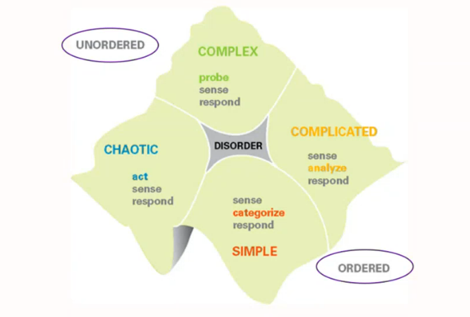

این اصطلاح معمولاً برای توصیف یک مجموعه از باورها، ارزشها، روشها و فرضیاتی استفاده میشود که در یک دورهی خاص در یک حوزهی علمی یا فکری پذیرفته شدهاند.
به عبارت دیگر، پارادایم یک چارچوب ذهنی یا نگرش کلی است که افراد برای درک و تحلیل مسائل مختلف از آن استفاده میکنند.
وقتی یک پارادایم در یک حوزه شکل میگیرد، دانشمندان و متخصصان آن حوزه معمولاً در چارچوب همان الگو فکر میکنند و پژوهشهای خود را انجام میدهند.
گاهی پارادایم ما را از درک حقیقت اطرافمون ناتوان میکند.
تغییر از یک پارادایم به پارادایم دیگر

تغییر از یک پارادایم به پارادایم دیگر
بازگشت به صفحه اصلی